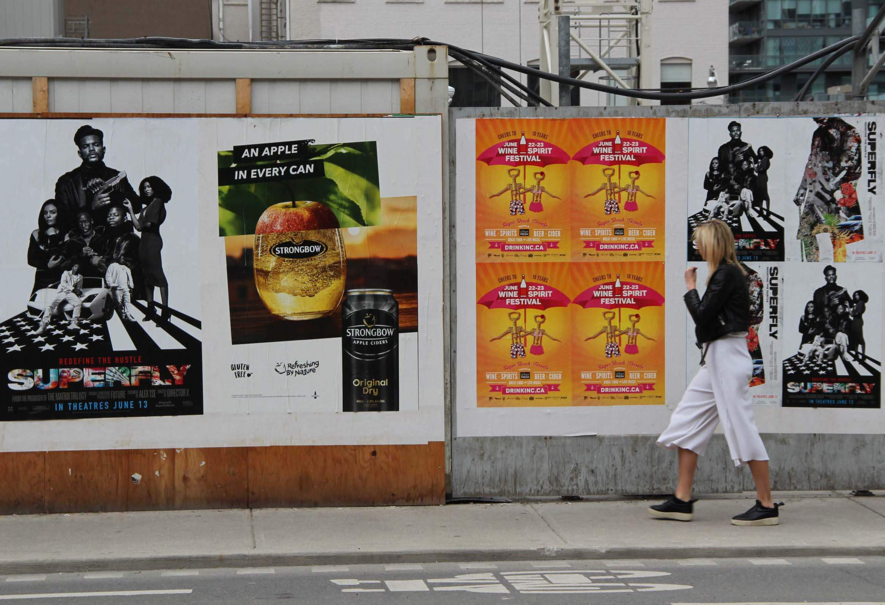

History
About Posters
1950’s to 1990’s: Street posters have historically been used in urban environments since the 19th century. Posters have been a primary way to spread propaganda and political messages specifically during the world wars where they were core for generating patriotism. These posters would be set in rows and columns across cities on walls of buildings and construction sites. Usually flashy in design with bold catchy text and memorable imagery. The typical set of street posters you would see today in Toronto date back to the 1950’s. At the time posters were a cheap and effective way to spread messages about business, arts and politics and the regulations had not yet been in place. This meant a flurry of posters of varied sizes and quantities on every surface. Posters acted as a way for the Toronto residents and workers to express and share publicly as individuals and groups with agencies. Activists believed in fighting for the rights to posters and in 1993 had the Canadian Supreme Court rule in favor of protecting posters under the Canadian Charter of RIghts and Freedom’s.
Photograph via Grassroots Advertising Inc.
2010 - Present Day: In 2010 the City of Toronto would ban and fine the installation of posters outside of confined areas. This included the exclusion of surfaces like poles, transit shelters and parking meters. They would then install message boards that would quickly get covered by a plethora of stapled posters as they provided little space for expression. The large posters seen in this site were then bought out by the WildPosting company to limit posters to those that would pay the company for a term. This ends up having large companies cooperate with WildPosting buying up the space and time for their varied event notices and products. Despite the constant cycling of street posters they still somehow end up feeling like a relic of a past consumerist society. With social media advertisements and notices don't need to be spread throughout the physical metropolitan markets. These posters act as expression through variety but shed light on the loss of individuality and self-expression in graphic design.